Bayesian Predictive Accuracy: Coal Mines Disasters Switchpoint Inference Analysis
The following plot shows the number of coal mining disasters that were observed around the United Kingdom from 1851 to 1962, each observation indicates the number of accidents that involved 10 or more coal minining workers dead, given by Maguire, Pearson & Wynn (1952) and published by R. G. Garrett (1979).
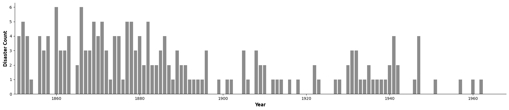
One can observe a change in the number of observed disaster count over the years, maybe due to technological advances or enforcing more stringent safety rules over the years. The target of our analysis is to infer the switchpoint (year) where the rate of disasters has changed. In doing so, we propose the following models:
- Model A: Poisson generating process.
- Model B: Zero-Inflated Poisson generating process.
- Model C: Negative-Binomial generating process.
We hypothesise that there is a single switchpoint with an underlying two probabilistic generating process, meaning that we have two different rates \(\lambda_1\) and \(\lambda_2\) over the years that generated the observed yearly disaster count \(C\), the change in \(\lambda\) happens after the switchpoint \(\tau\),
Model A: Poisson Generating Process
In the first model we use a Poisson likelihood, with the following priors:
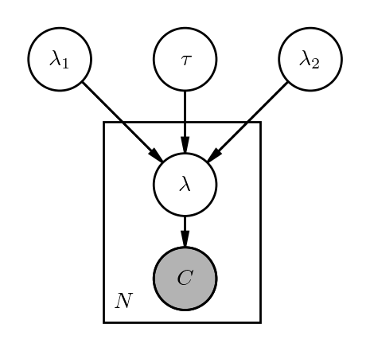
Model B: Zero-Inflated Poisson Generating Process
In the second model we use a Zero-Inflated Poisson model. A Zero-Inflated distribution is a mixture of two distributions, the first is a degenerate distribution that generates only zeros with a probability \(\psi\), and the second is a Poisson distribution. Zero-Inflated distributions allows frequent zero-valued observations, which is a plausible assumption for our case and data (zero accidents is not an improbable situation, and it's even justified by the data), and model priors are:
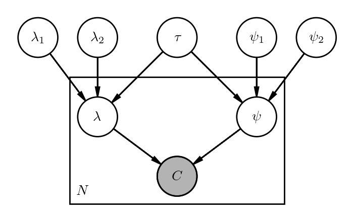
Model C: Negative-Binomial Generating Process
In the third model, we chose a Negative-Binomial likelihood. Negative-Binomial distribution offers more flexibilty over Poisson, because in Poisson distribution we have the mean equals the variance equals the rate parameter: \(\mathbb{E}[x] = \text{var}[x] = \lambda\) where \(x ∼ \text{Poisson}({\lambda})\), which is not the case in Negative-Binomial distribution where the mean and variance are not necessarily equal, we will check if this flexibility might offer a better description for the data comparing two the Poisson likelihood in first two models. Negative-Binomial distribution requires an extra parameter \(\alpha\), we use an exponential prior for this parameter:
We use pymc library to perform Bayesian inference and sample from posterior \(p(\boldsymbol{\theta} \mid \boldsymbol{Y}\)) where \(\boldsymbol{\theta}\) represents each model parameters, using Markov Chain Monte Carlo samplers. In the following graphs, we plot the posterior distribution of each model rate parameter and the distribution of the switchpoint random variable \(\tau\):
Rate Parameters \(\lambda_1\) and \(\lambda_2\)
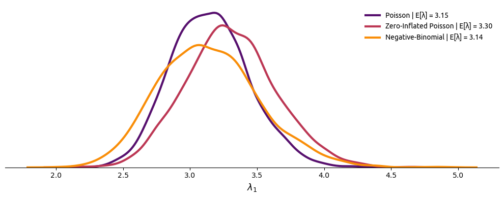
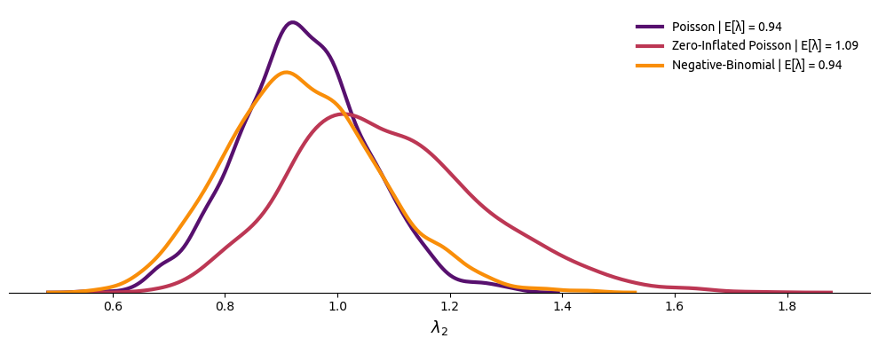
Above posterior plots of \(\lambda_1\) and \(\lambda_2\) for the three models strongly justify our hypothesis that the rate parameter \(\lambda\) is not fixed and did change over the years.
Switchpoint Parameter \(\tau\)
Poisson:
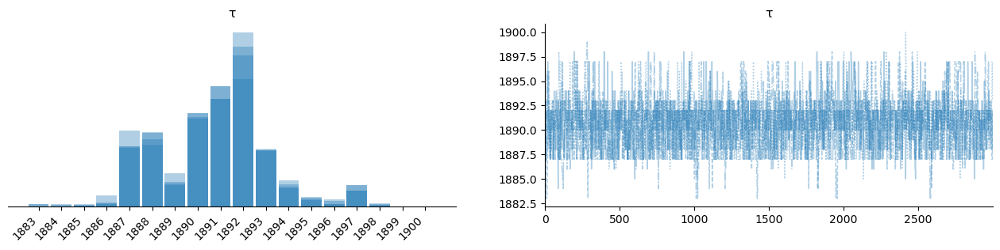
Zero-Inflated Poisson:
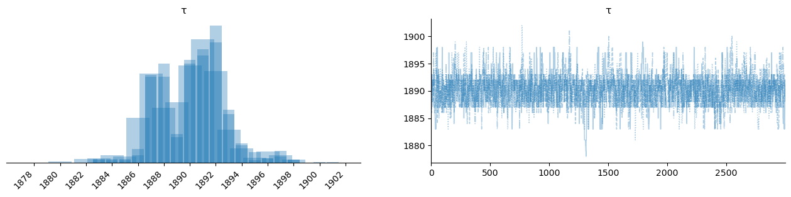
Negative-Binomial:
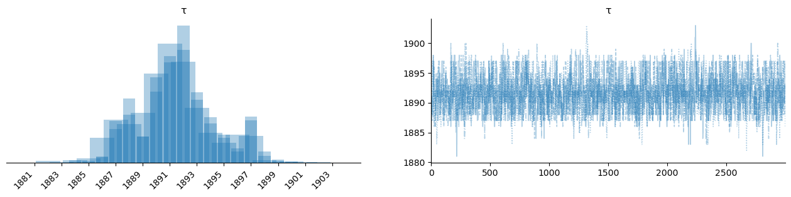
Above trace plots (we have two chains, hence the blue and light-blue overlapped histograms) shows each model's belief about the value of \(\tau\) where the rate of change might have taken place. Naturally, The posterior distribution of \(\tau\) in each model differ but the mode of each is around the year 1892.
The beauty of Bayesian statistics is that we don't report a single point-estimate of \(\lambda\) or \(\tau\) but a complete distribution that reflects our uncertainty of our models' parameters. However, we can plot the expected value of rate parameter over the years \(\mathbb{E}[\lambda]\)
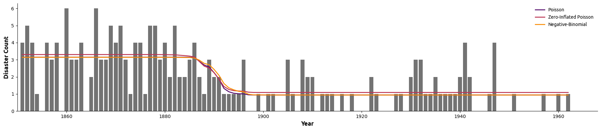
Disclaimer: The following section is heavily based on Andrew Gelman's book "Bayesian Data Analysis" and Ben Lambert's "Student's Guide to Bayesian Statistics".
Given the three models we built, how do we compare them? And how do we tell which one is the best?
When assessing the accuracy of a predictive model, we usually don't know the optimum measure (such as classification accuracy and monetary cost As Gelamn et al. lists them), and in such cases we turn to generic score functions and rules. Score functions are used in point prediction, while score rules are used in probabilistic prediction to report full uncertainty over new data point \(\tilde{y}\)
One famous example of such score functions that's used to assess the prediction accuracy of a model is the mean squared error function, however, the usage of such function is not theoritically justified unless a Gaussian model is used. And a commonly used scoring rule for probabilistic prediction is the log predictive density (or log likelihood).
Note: in the following paragraphs we will adopt the same notation used by Gelman et al., given \(y\) as the observed data points sampled from a true but hidden distribution \(f(y)\), and \(\tilde{y}\) is the future non-observed data points.
If we have a single out-of-sample data point \(\tilde{y_i} ∼ f(y)\) and we would like to measure our model's fit of such new point using log predictive density (let's call it \(\text{lpd}\)), we can write the following:
Equation (4) simply means that the log predictive density for our model (the prediction accuracy metric that we chose) is simply the expected value of the likelihood conditioned on a model parameter \(\theta\) sampled from the posterior distribution \(p(\theta \mid y)\). If we take the average over all expected (but still unknown) values of \(\tilde{y} \sim f(\tilde{y})\), we now have the expected log predictive density (\(\text{elpd}\)):
One might notice that by maximizing \(\text{elpd}\) we are minimizing the KL-divergence between \(p(\tilde{y}\mid y)\) and the true distribution \(f(\tilde{y})\), which makes maximizing the \(\text{elpd}\) the optimum fit:
Gelman goes even further and defines the expected log predictive pointwise density, not for a single point \(\tilde{y_i}\) but for \(N\) future observations:
Approximations to the ELPD
In real world, we do not know the true distribution \(f(\tilde{y})\), and we don't even have new data \(\tilde{y}\), so we try to approximate \(f(\tilde{y})\) by using the observed data \(\boldsymbol{Y} := \{ y_1, \dots, y_n\}\), meaning that we use the same data that were used to fit the model to evaluate the fit (except in LOO-CV), which of course might lead to overfitting if no corrections were applied. The following are some of such approximations:
(Note that we multiply the AIC, DIC & WAIC expressions by -2, so we aim to minimize any of those metrics when used)
1. Akaike Information Criterion (AIC)
A popular frequentist method to evaluate a model's predictive accuracy, in which we use the maximum likelihood estimation of the model parameters to compute the log-density \(p(\boldsymbol{Y}\mid \hat{\theta}_{mle})\) as an approximation to \(\text{elpd}\)
\(\kappa\) is the effective number of parameters, subtracted from the log-likelihood as a correction for using the same data to evaluate the fit of the model, and obviously this method is non-Bayesian.
2. Deviance Information Criterion (DIC)
The DIC measure uses the posterior mean \(\hat{\theta}_{map}\) as the point estimate to calculate the log-density, the correction term in DIC is the variance of the log-likelihood with \(\theta\) sampled from the posterior distribution \(p(\theta \mid \boldsymbol{Y})\):
The larger the variance correction term the more uncertain we are in our posterior values, the large the penalty (correction) applied on the model prediction fit.
3. Watanabe-Akaike Information Criterion (WAIC)
In WAIC, we consider each data point \(y_i\) separately, and we don't use a point estimate of \(\theta\), we rather take the expectation over all the possible \(\theta\) sampled from the posterior distribution, WAIC in that sense is fully Bayesian.
4. Leave One Out - Cross Validation (LOO-CV)
In LOO-CV, given \(N\) data points, we fit the model \(N\) times using a subset of the dataset denoted as \(\boldsymbol{Y}_{-i}\), which is the dataset \(\boldsymbol{Y}\) except a single data point \(y_i\) that we use to evaluate the fit of the model using the log posterior predictive density \(\text{lpd}\):
after repeating this fit and calculating the log posterior predictive density \(N\) times, we estimate \(\text{lppd}\) by calculating the average of \(\text{lpd}\):
To match our Bayesian workflow, we will only use LOO-CV and WAIC to compare our different models.
We used arviz library to calculate both LOO-CV and WAIC to compare the three models (for the following plots, the higher the value of LOO and WAIC, the better is the model):
LOO-CV
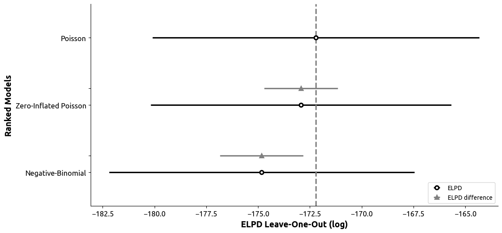
WAIC
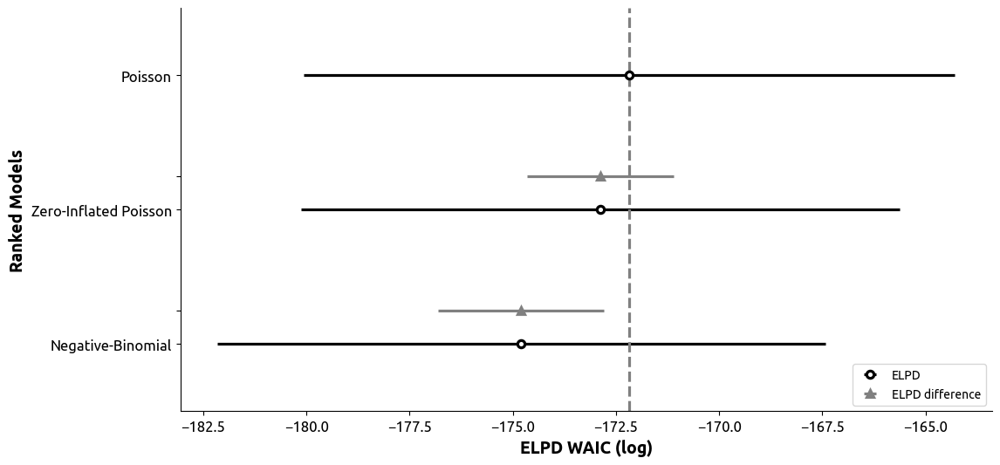
We conclude that the Poisson model is the best out of the three (and also the simplest).